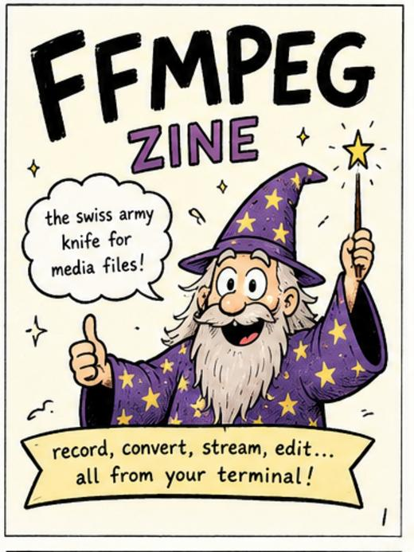
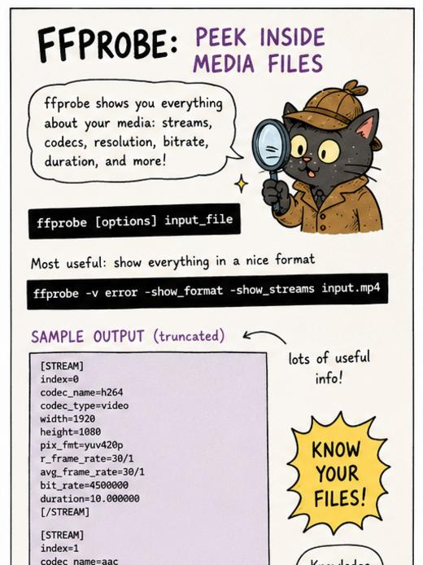
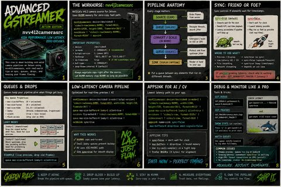
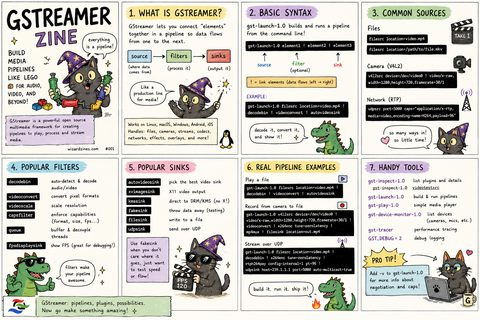
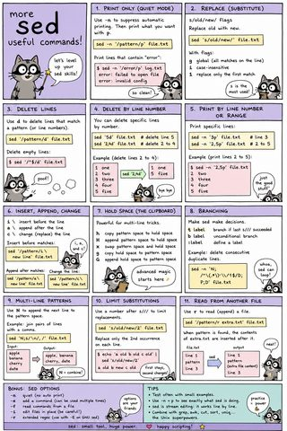
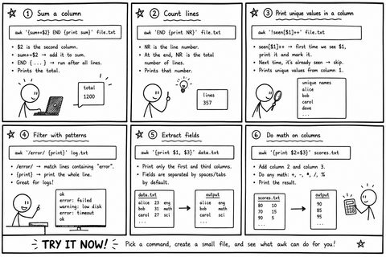
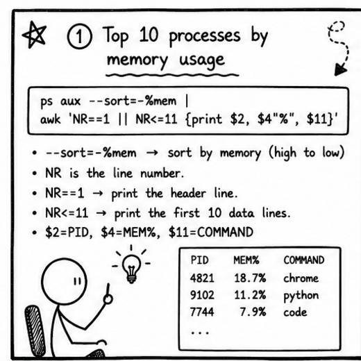
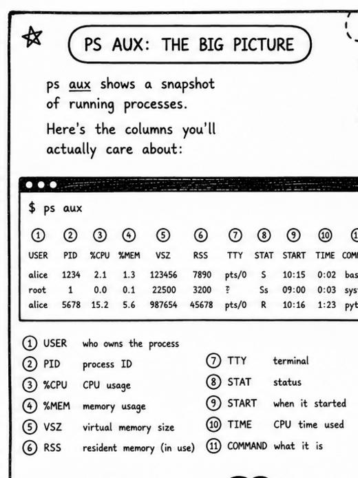

Hand-drawn field notes on ffmpeg, gstreamer, sed, and awk. Free to read, blue by design.
est. 2026 · all blue, all the timeEvery one of these started as a way to actually remember a tool instead of re-googling it every three months. Now they live here. 8 zines

The swiss army knife for media files. Record, convert, stream, and edit — all from your terminal.
Read it →
Peek inside media files with ffprobe, play anything instantly with ffplay, and convert 30fps to 60fps without losing your mind.
Read it →
Build media pipelines like Lego. Sources, filters, sinks, and real pipeline examples for audio, video, and beyond.
Read it →
High performance, low latency, zero excuses. nvv4l2camerasrc, pipeline anatomy, sync, queues, and debugging like a pro.
Read it →
Level up your one-liners. Printing, substitution, deleting lines, hold space, branching, and a full cheat sheet.
Read it →
Sum a column, count lines, filter with patterns, and do math on columns. Six awk one-liners to try right now.
Read it →
Find memory hogs, hunt zombie processes, and rank top CPU users, all with ps aux piped into awk.
Read it →
The big picture on ps aux, the flags you actually use, and which awk field maps to which column.
Read it →